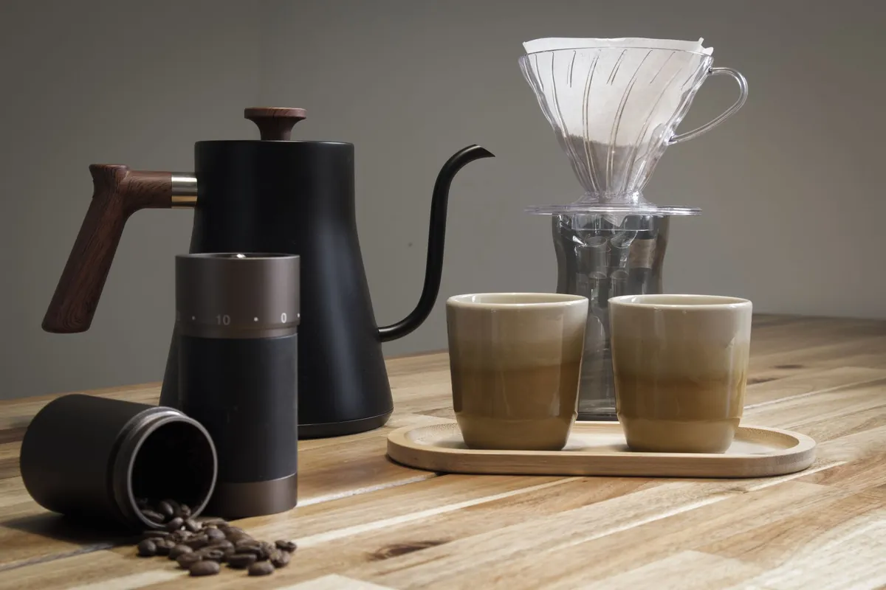

Coffee's Body-Boosting Secrets: Less Fat, More Muscle, and Hormonal Harmony

Key takeaways
- I remember staring at the scale, utterly defeated.
- Despite my best efforts at the gym and trying to eat right, my body just wasn't cooperating.
- Track what feels sustainable and adjust gradually.
I remember staring at the scale, utterly defeated. Despite my best efforts at the gym and trying to eat right, my body just wasn't cooperating. I felt sluggish, my clothes felt tight, and frankly, I was frustrated. Then, I started digging into the science behind my daily cup of joe, and what I found blew me away. Turns out, Coffee's Body-Boosting Secrets: Less Fat, More Muscle, and Hormonal Harmony aren't just buzzwords; they're backed by some fascinating research. Your morning coffee might be doing more for you than you ever imagined.
Think your morning coffee is just a pick-me-up? Think again! New research is spilling the beans on how your daily java habit might be secretly reshaping your body – giving you less fat, more muscle, and even tweaking your hormones in surprising ways. We're breaking down what this could mean for your fitness goals and overall health, so grab your mug and let's dive in!
Let's talk about fat. Caffeine, the star player in coffee, is a known thermogenic. This means it can boost your metabolism and increase fat oxidation, essentially helping your body burn more fat for energy. I've noticed this myself; on days I have my coffee before a workout, I feel more energized and less like I'm just going through the motions.
But it's not just about burning fat. Coffee might also play a role in muscle growth. Some studies suggest that caffeine can enhance muscle protein synthesis, the process your body uses to repair and build muscle tissue. This is huge for anyone hitting the gym regularly. It means your post-workout recovery might be more efficient, and your muscles could potentially grow stronger and larger over time. I've been incorporating a cup of coffee about an hour before my strength training sessions, and I feel a noticeable difference in my endurance and recovery.
Beyond the physical, Coffee's Body-Boosting Secrets: Less Fat, More Muscle, and Hormonal Harmony extend to our internal chemistry. Caffeine can influence hormones like cortisol and adrenaline. While too much stress can wreak havoc, a moderate amount of caffeine can actually help mobilize fatty acids and improve alertness. It's a delicate balance, though. For me, finding that sweet spot meant cutting back on late-day coffee to protect my sleep.
The impact on insulin sensitivity is another area of interest. Some research points to coffee consumption being linked to a lower risk of type 2 diabetes, potentially due to its effects on glucose metabolism and insulin sensitivity. This is fantastic news for long-term health. It suggests that enjoying your coffee might be contributing to better metabolic health, which is a cornerstone of feeling good and maintaining a healthy weight.
I've also found that coffee can be a great tool for managing my appetite. The caffeine can suppress hunger hormones for a short period, which can be helpful when I'm trying to avoid unnecessary snacking. It's not a magic bullet for weight loss, but it can certainly be a supportive habit when combined with a balanced diet. This is a simple, yet effective, part of my overall strategy for staying on track with my health goals. It’s a small win that adds up, much like focusing on a related healthy tip you can find here.
The 2-Minute Win
Before your next meal, take a moment to savor a small cup of black coffee. Notice how it affects your hunger levels and your focus. This simple experiment can help you understand your personal response to coffee and how it might fit into your eating habits.
For those of us who struggle with consistency, integrating coffee into a routine can be surprisingly easy. It's often already a part of our morning ritual. The key is to be mindful of how you consume it. Loading it up with sugar and cream can negate some of the benefits. Black coffee or coffee with a splash of unsweetened almond milk is my go-to. This ties into finding another practical guide on making healthier choices here.
Don't underestimate the power of brewing your own. Pre-packaged flavored creamers often contain hidden sugars and artificial ingredients that can undo the metabolic benefits of your coffee. Making your own healthy additions, like cinnamon or a dash of vanilla extract, can make a big difference.
Hormonal harmony is a complex topic, and coffee's role is nuanced. While it can temporarily boost cortisol, chronic high stress can lead to hormonal imbalances. For me, this meant paying attention to my coffee timing. Drinking coffee too late in the day can disrupt my sleep, which is crucial for hormone regulation. Finding a similar wellness insight about sleep can be explored here. It’s about using coffee as a tool, not a crutch.
The type of coffee beans and how they're roasted can also influence their chemical composition and potential health benefits. For instance, lighter roasts tend to retain more antioxidants. While I'm not a coffee snob, I have noticed that higher-quality beans seem to provide a smoother energy boost without the jitters. Exploring different brewing methods can also be part of the fun. This is a great way to stay consistent with this healthy habit.
Ultimately, embracing Coffee's Body-Boosting Secrets: Less Fat, More Muscle, and Hormonal Harmony is about mindful consumption. It’s about understanding how this beloved beverage interacts with your unique body. It's not about perfection, but about making informed choices that support your well-being. If you're looking to further optimize your health journey, you can explore more health guides.
Educational only — not medical advice.
Disclosure: This page may contain affiliate links.
Recommended Reading
- The Ultimate Guide to Daily Hydration: Boost Energy & Wellness
- Unlock Your Health: The Surprising Benefits of Daily Hydration for Americans
- Morning Hydration: Unlock Your Day with the Best Water Habits
More in health
 health
healthBooze Breakdown: Which Drink is Healthiest (or Least Unhealthy)?
Curious about the Booze Breakdown: Which Drink is Healthiest (or Least Unhealthy)? I've dug into the latest research to
Read article → health
healthIs Your Toddler Eating Ultra-Processed Foods? The Shocking Truth About Toddler Meals
Discover the shocking truth: 80% of toddler foods are ultra-processed. Learn what this means for your child's health and
Read article →Related posts
healthBooze Breakdown: Which Drink is Healthiest (or Least Unhealthy)?
Curious about the Booze Breakdown: Which Drink is Healthiest (or Least Unhealthy)? I've dug into the latest research to
Read article →healthIs Your Toddler Eating Ultra-Processed Foods? The Shocking Truth About Toddler Meals
Discover the shocking truth: 80% of toddler foods are ultra-processed. Learn what this means for your child's health and
Read article → health
healthCoffee vs. Energy Drinks: Your Heart's Best Friend or Worst Enemy?
Unpacking the science: Is coffee or energy drinks better for your heart? Discover the truth about Coffee vs. Energy Drin
Read article →